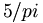
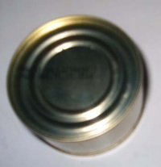
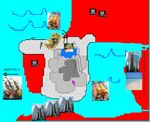
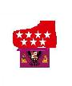
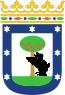
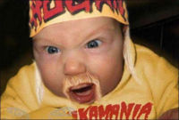

La Frikipedia:Infoboxes parte 2
 De: La Frikipedia, la enciclopedia extremadamente seria.
De: La Frikipedia, la enciclopedia extremadamente seria.
Pincha Aquí para volver a la primera parte de esta ayuda y aquí para ver la tercera parte de la ayuda.
Plantilla: Infobox Elemento químico
Elemento químico: Plantilla:Infobox elemento
- {{Infobox elemento}}
| Datos
|
Resultados
|
|
{{Infobox elemento
| muestra = Autogiro.jpg
| nombre = Helicóptero y Helicótero
| nombres = Compresa con hélices
| serie = Gases plebeyos
| descubridor = Leonardo Di Caprio
| color = Moco pistacho
| cosas = Máquinas voladoras
| usos = Malignos, malignos
| estado = Cáquido
| peso = Entre 0 y 1.000 cachifloides
| struct = De hueso de aceituna
| abstracción = 0º [[Melvin]]
| humungoso = <math>5 pi</math> radianes
}}
|
|
|
| Nombre oficial:
|
Helicóptero y Helicótero
|
| Otros nombres:
|
Compresa con hélices
|
| Serie alquímica:
|
Gases plebeyos
|
| Descubridor:
|
Leonardo Di Caprio
|
| Color en tabla:
|
Moco pistacho
|
| Presente en:
|
Máquinas voladoras
|
| Usos:
|
Malignos, malignos
|
| Estado:
|
Cáquido
|
| Peso kg/puñao:
|
Entre 0 y 1.000 cachifloides
|
| Estructura:
|
De hueso de aceituna
|
| Abstracción:
|
0º Melvin
|
| Humungoso:
|
 radianes
|
|
Plantilla: Infobox animal
Animalitos: Plantilla:Infobox animal
- {{Infobox animal}}
| Datos
|
Resultados
|
|
{{Infobox animal
|foto=Atun_foto.jpg
|descripción = Es Atún, Sabor Atún y olor y color a Atún
|ncomún=Atún
|ncientífico=Atunidus
|especie=Latárido
|subespecie=azul
|alimentación=polvo principalmente
|descripción=pequeño parecido a los mejillones pero que pone atún en la piel
|hábitat=supermercados
|localización=Todo Europa y parte de España.
|número=millones de millares de trillones
|extinto=calculada para el 2021
|pokemonización=Se convierte en una lata tamaño familiar
}}
|
| Atún
|
| 
|
| Es Atún, Sabor Atún y olor y color a Atún
|
|
| Nombre común:
|
Atún
|
| Nombre científico:
|
Atunidus
|
| Especie:
|
Latárido
|
| Subespecie:
|
azul
|
| Alimentación:
|
polvo principalmente
|
| Apariencia:
|
pequeño parecido a los mejillones pero que pone atún en la piel
|
| Hábitat natural:
|
supermercados
|
| Localización:
|
Todo Europa y parte de España.
|
| Número aproximado de ejemplares:
|
millones de millares de trillones
|
| Fecha de extinción:
|
calculada para el 2021
|
| Pokemonización:
|
se convierte en una lata tamaño familiar
|
|
Plantilla: Infobox vegetal
Plantas: Plantilla:Infobox vegetal
- {{Infobox vegetal}}
| Datos
|
Resultados
|
|
{{Infobox vegetal
|foto=Planta_tabaco.jpg
|ncomún=Tabaco
|ncientífico=tabacus fuminidus
|especie=planta
|subespecie=pafumá
|clima=frío y con hielo
|zonas=de fumadores
|comestible=si
|fumable=no sirve para otra cosa
|morfología=cilíndrico generalmente
|existencia=que yo pueda fumar
}}
|
|
|
| Nombre común:
|
Tabaco
|
| Nombre científico:
|
tabacus fuminidus
|
| Especie:
|
planta
|
| Subespecie:
|
pafumá
|
| Clima:
|
frío y con hielo
|
| Zonas en las que se da:
|
de fumadores
|
| ¿Comestible?:
|
si
|
| ¿Fumable?:
|
no sirve para otra cosa
|
| Morfología (para el que sepa que es eso):
|
cilíndrico generalmente
|
| Finalidad de su existencia:
|
que yo pueda fumar
|
|
Plantilla: Infobox País
Paises: Plantilla:Infobox país
- {{Infobox país}}
IMPORTANTE: si vas a usar esta plantilla, ten cuidado cuando pongas la capital, porque NO tiene que estar entre corchetes [[ ]], por el diseño "especial de la plantilla"
| Datos
|
Resultados
|
|
{{Infobox país
|nombre_local = España y olé
|imagen_bandera = [[Image:Banderarara.gif|150px]]
|imagen_escudo = [[Image:Torodeosborne.gif|150px]]
|lema_nacional = Tarde, mal y a rastras
|himno_nacional = Franco, franco que tiene el culo blanco...
|imagen_mapa = [[Imagen:Mapa cutre Espana.jpg|150px]]
|capital = Madriz
|mayor_ciudad = [[Las Pedroñeras]]
|lenguas_oficiales = Catalán, Ejpanyol, Inglés en benalmádena, Bable, [[SMS]]
|tipo_de_gobierno = [[República]] [[Carlista]] Postfranquista [[Masón|Masónica]] y de [[Borracho|borrachera]]
|título_líder = '''Jefe de Estado'''
|nombre_líder = [[Chiquito de la Calzada]]
|área = [[peninsula iberica la del jamon weno weno weno]], Canarias, las islas afortunadas, Baleares, Ceuta Melilla
|estimación_población = 44 millones y dos más de emigrantes
|moneda = [[Peheta]] y el [[Lero]] del año 2002 al 2003, y más tarde hacia el año 3472
|zona_horaria = GTM +1 (GMT en Canarias)
|dominio_en_internet = .es
|código_telefónico = 0034
|notas = ''No hay mal que por bien no venga''
}}
|
| España y olé
|
|
|
|
| (Bandera)
|
(Escudo de armas)
|
|
| Lema: Tarde, mal y a rastras
|
Himno: Franco, franco que tiene el culo blanco...
|

|
| Capital
|
Madriz
|
| Mayor ciudad
|
Las Pedroñeras
|
| Lenguas oficiales
|
Catalán, Ejpanyol, Inglés en benalmádena, Bable, SMS
|
| Gobierno
|
República Carlista Postfranquista Masónica y de borrachera
|
| Jefe de Estado Chiquito de la Calzada
|
| Área
|
peninsula iberica la del jamon weno weno weno, Canarias, las islas afortunadas, Baleares, Ceuta Melilla
|
| Población
|
44 millones y dos más de emigrantes
|
| Moneda
|
Peheta y el Lero del año 2002 al 2003, y más tarde hacia el año 3472
|
| Zona horaria
|
GTM +1 (GMT en Canarias)
|
| Dominio Internet
|
.es
|
| Código telefónico
|
0034
|
| No hay mal que por bien no venga
|
|
Plantilla: Infobox Ciudad
Ciudades: Plantilla:Infobox ciudad
- {{Infobox ciudad}}
| Datos
|
Resultados
|
|
{{Infobox ciudad
|nombre = Toledo
|bandera = banderadto.JPG
|escudo = escudo_de_toledo.JPG
|topofi = madritanos
|país = España
|cp = pendiente de asignar
|superficie = si
|altitud = 10 pisos
|distancia = la sufifiente para llegar tarde a currar
|fundación = 9851 a.c.
|población = indignada
|gentilicio = antes Tolais y ahora madrileños
|alcalde = varios
|notas = nada de esto se basa en nada, no tener en cuenta please
}}
|
| Toledo
|
| 
|

|
| (Bandera)
|
(Escudo de armas)
|
|
| Topónimo oficial
|
madritanos
|
| País
|
España
|
| Código postal
|
pendiente de asignar
|
| Superficie
|
si
|
| Altitud
|
10 pisos
|
| Distancia
|
la sufifiente para llegar tarde a currar
|
| Fundación
|
9851 a.c.
|
| Población
|
indignada
|
| Gentilicio
|
antes Tolais y ahora madrileños
|
| Alcalde
|
varios
|
| nada de esto se basa en nada, no tener en cuenta please
|
|
Plantilla: Infobox Cita
Citas sobre cierto tema: Plantilla: Cita
- {{Cita|TEXTO DE LA CITA|AUTOR DE LA CITA|MOTIVO DE LA CITA}}
Plantilla: Infobox grupo
Plantilla para grupos músicales. Plantilla:Infobox grupo
- {{Infobox grupo}}
| Datos
|
Resultados
|
|
{{Infobox grupo
|imagen = Mojinos-Escozios.Jpg
|nombre = Mojinos Escozíos
|origen = Varios
|tiempo = [[1996]]-actualidad
|estilo = Classic/Maiami metal soul(¿¡ezo qué é!?)
|discográfica = El mojino alegre
|miembros = El Sevilla,El chicho,El zippy,El vidalito ,El puto, (el Fary,El lute ,El efante)
|estado = Soltero
|sitio web = [http://www.mojinos.com Er Sitio Web de los Mojinos Escozíos]
}}
|
|
Plantilla: Infobox videojuego
Plantilla para Videojuegos. Plantilla:Infobox videojuego
- {{Infobox videojuego}}
| Datos
|
Resultados
|
|
{{Infobox videojuego
|título = Final Fantasy VII
|imagen = ff7.jpg
|desarrollador = [[Square-Enix]]
|distribuidor = SCEE Spain
|diseñador = Hironobu Sakaguchi
|motor = de dos tiempo turbodiesel
|lanzamiento = de martillo
|género = RPG (Rocket Propelled Grenade)
|modos = multijugador pero cada uno en su casa
|edades = da igual 8 que 80
|plataformas = [[Atari 2006]], [[プレイステーション]], [[PC]]
|formatos = [[CD]], [[DVD]] y cinta de casette
|requisitos = Tener algo de frikismo
|entrada = 3'80[[€]] cuesta en el cine
|puntuaciones = [[Hobby Mentiras]]: 10/10
}}
|
| Final Fantasy VII
|
|
|
| Desarrollador:
|
Square-Enix
|
| Distribuidor:
|
SCEE Spain
|
| Diseñador:
|
Hironobu Sakaguchi
|
| Motor:
|
de dos tiempo turbodiesel
|
| Lanzamiento:
|
de martillo
|
| Género:
|
RPG (Rocket Propelled Grenade)
|
| Modos:
|
multijugador pero cada uno en su casa
|
| Edades:
|
da igual 8 que 80
|
| Plataformas:
|
Atari 2006, プレイステーション, PC
|
| Formatos:
|
CD, DVD y cinta de casette
|
| Requisitos:
|
Tener algo de frikismo
|
| Entrada:
|
3'80€ cuesta en el cine
|
| Puntuaciones:
|
Hobby Mentiras: 10/10
|
|
Plantilla: Infobox Monstruo
Plantilla para monstruos mu bestias Plantilla:Infobox Monstruo
- {{Infobox Monstruo}}
| Datos
|
Resultados
|
|
{{Infobox Monstruo
|nombre = Kraken
|imagen = kraken.gif
|freq = Habitual en Aguas Internacionales
|org = Individual
|act = A las 18:30, para merendar
|dieta = Barcos y tripulaciones
|int = La suficiente como para hacer raíces cúbicas
|naparicion = 2.598<
|ac = Masa gelatinosa dificilmente penetrable
|ataques = Coger con tentáculos, morderte, hacerte pupa...
|olor = A cazuela de gambas
|sabor = Algo así como pulpo a la gallega
|moral = Alta, pero siempre andan cabreados
|cpref = Verde pistacho
}}
|
| Kraken
|
|
|
| Frecuencia:
|
Habitual en Aguas Internacionales
|
| Organización:
|
Individual
|
| Actividad:
|
A las 18:30, para merendar
|
| Dieta:
|
Barcos y tripulaciones
|
| Inteligencia:
|
La suficiente como para hacer raíces cúbicas
|
| Número de aparición:
|
2.598
|
| Armadura:
|
Masa gelatinosa dificilmente penetrable
|
| Ataques:
|
Coger con tentáculos, morderte, hacerte pupa...
|
| Olor:
|
A cazuela de gambas
|
| Sabor:
|
Algo así como pulpo a la gallega
|
| Moral:
|
Alta, pero siempre andan cabreados
|
| Color preferido:
|
Verde pistacho
|
|
Plantilla: Infobox personaje
Plantilla para personajes. Plantilla:Infobox personaje
- {{Infobox personaje}}
| Datos
|
Resultados
|
|
{{Infobox personaje
|imagen_personaje = hijo_hulk.jpg
|descripción = Foto tomada a sus 3 meses de edad
|nacimiento = 666 a.C.
|muerte = ¡Jamás!
|ocupación = Luchador
|nacionalidad = Gringo
|malo_bueno= Ambos
|atentados = Romper huesos
|religion = Pastrafarismo
|notas = Se rumorea que está medio loco
}}
|
| Hulk Hogan
|
| 
|
| Foto tomada a sus 3 meses de edad
|
|
| Nacimiento
|
666 a.C.
|
| Muerte
|
¡Jamás!
|
| Ocupación
|
Luchador
|
| Nacionalidad
|
Gringo
|
| Malo o Bueno
|
Ambos
|
| Atentados contra la humanidad
|
Romper huesos
|
| Religión
|
Pastrafarismo
|
| Notas
|
Se rumorea que está medio loco
|
|
Resto de ejemplos
Entra en La Frikipedia:Infoboxes parte 1 o en La Frikipedia:Infoboxes parte 3
Autor(es):
- Doctor grijander
- Homer Tunder
- Frikiman
- Aque
- Alex2610
- El loco del gorro
- Nadaquever
- Veni Vidi Vici
- Harry El del Pote
- Axelaxel12
Frikipedia 2005-2016, Licencia
GFDL 1.2 - Extraído por FrikiLeaks